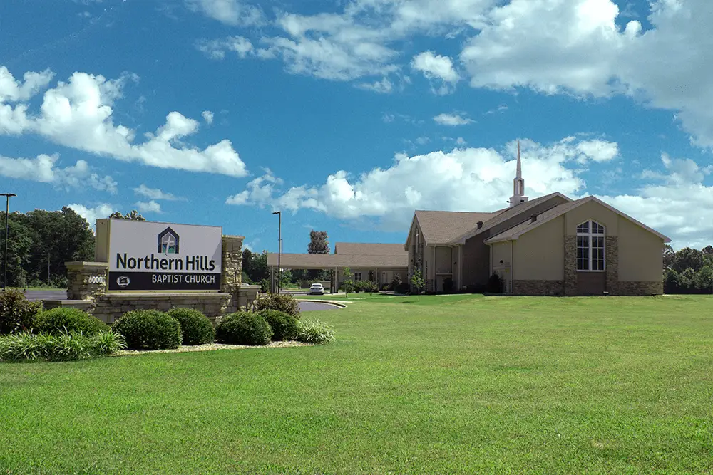

Texarkana · Family owned and operated
Heating, air conditioning & plumbing in Texarkana
Heating, air conditioning, plumbing, repair, service and installation in Texarkana. Honest, professional work from a company that treats your family like its own.
What we do
Air Conditioning & Heating
Repair, service, cleaning and installation. All makes and models, Energy Star equipment, heat pumps and smart thermostats.
Learn more →02Plumbing
Water heaters, drain cleaning with camera inspection, gas pressure testing and slab leak repair.
Learn more →03Preventative Maintenance Program
Become a priority customer: 10% off repairs, priority emergency service and no overtime labor charges.
Learn more →04Air Duct Cleaning
Truck-mounted Push-Pull duct cleaning with external extraction.
Learn more →05Dryer Vent Cleaning
Remove lint build-up, the leading cause of house fires from dryers.
Learn more →Goff Heating / Air Conditioning and Plumbing
We provide only the most exceptional service for your home's heating, air conditioning and plumbing. We hold ourselves to a strict standard so we can give our customers the best, honest and professional work around.
Our staff works hard to provide you with the best services and products available. We are a family-owned and operated company that treats your family as we do our family. Licensed in Arkansas and Texas, serving greater Texarkana including Miller, Little River, Bowie and Cass Counties.


What customers say
I cannot thank Goff Heating & Air Conditioning in Texarkana enough for what they did for my family! Their honesty, professionalism, and excellent work turned a miserable situation into an experience we will never forget. After another company inspected our air…
Thank you Warren for sending someone to our house so quick and helping us. We recommend you for anyone needing hvac or plumbing.
Wanna say a big thank you to Cody!! We appreciate you for coming out on the weekend to help solve our issue with our ac at our apartment complex!! Highly recommended Goff to fix the issue!
From the blog
How to Prepare Your Home for Winter
Winter will be here before we know it! With cooler months just on the horizon, you will want to keep your family as warm as possible in your Texarkana, TX home. Here are a few tips to help you stay comfortable during the upcoming winter season.
Read more →
The Homeowner’s Guide to HVAC Troubleshooting
As a homeowner, you’ve got a lot to take care of. From the roof to foundation, there’s a lot to keep in mind to make
Read more →
How To Save Money on Your Air Conditioning Bill Each Month
Are you ready for summer to be over yet? July and August are typically the hottest months of the year in Texarkana, with temperatures averaging
Read more →Financing
Flexible payment options for sustainable home upgrades. Apply in minutes and get approval in seconds.
Financing options